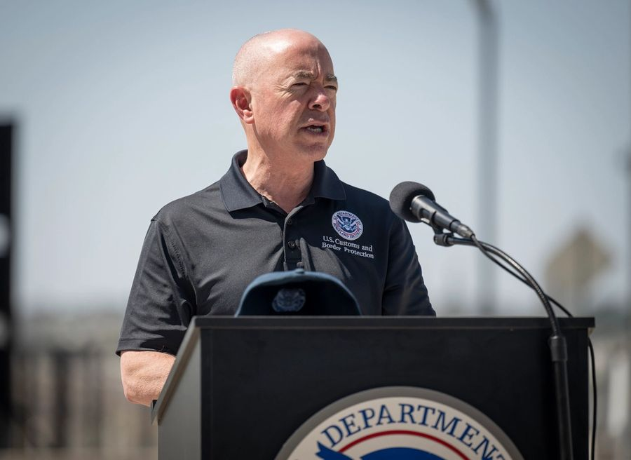

ネタニヤフ裁判：刑事責任と公的な監視の区別――分析The Netanyahu trial: Distinguishing between criminal liability and public scrutiny - analysis司法取引でネタニヤフ氏の刑事手続きは解決するかもしれないが、国民が統治者に何を期待するかという、より大きな問題を決着させることはできない。
ネタニヤフ裁判：刑事責任と公的な監視の区別――分析The Netanyahu trial: Distinguishing between criminal liability and public scrutiny - analysis司法取引でネタニヤフ氏の刑事手続きは解決するかもしれないが、国民が統治者に何を期待するかという、より大きな問題を決着させることはできない。 バスケットボール、マッカビ・テルアビブがミュンヘンで勝利、ハポエル・テルアビブは勝率.500に後退Maccabi Tel Aviv basketball secures win in Munich as Hapoel Tel Aviv drops to .500マッカビ・テルアビブはミュンヘンで説得力のある勝利を収めた一方、ハポエル・テルアビブは再び敗れ、勝率.500の戦績に落ちた。
バスケットボール、マッカビ・テルアビブがミュンヘンで勝利、ハポエル・テルアビブは勝率.500に後退Maccabi Tel Aviv basketball secures win in Munich as Hapoel Tel Aviv drops to .500マッカビ・テルアビブはミュンヘンで説得力のある勝利を収めた一方、ハポエル・テルアビブは再び敗れ、勝率.500の戦績に落ちた。 イスラエル代表バスケットボールチーム、今後の体制刷新を控えFIBAワールドカップ予選に備えるIsrael's national basketball team prepares for FIBA World Cup qualifiers amid upcoming shakeupイスラエル代表バスケットボールチームは、ヘッドコーチのアリエル・ベイト氏の退任と、より広範な…がある中、ラトビアで開催される今後のFIBAワールドカップ予選ウィンドウに向けて準備を進めている
イスラエル代表バスケットボールチーム、今後の体制刷新を控えFIBAワールドカップ予選に備えるIsrael's national basketball team prepares for FIBA World Cup qualifiers amid upcoming shakeupイスラエル代表バスケットボールチームは、ヘッドコーチのアリエル・ベイト氏の退任と、より広範な…がある中、ラトビアで開催される今後のFIBAワールドカップ予選ウィンドウに向けて準備を進めている 動画：IDF、レバノンのラドワン部隊訓練キャンプでヒズボラのロケット弾と発射装置数十基を攻撃WATCH: IDF strikes dozens of Hezbollah rockets, launchers at Radwan Force training camp in LebanonIDFによると、それらの兵器はヒズボラのテロリストがイスラエル市民とIDF部隊に対する攻撃を実行するために使用される予定だった。
動画：IDF、レバノンのラドワン部隊訓練キャンプでヒズボラのロケット弾と発射装置数十基を攻撃WATCH: IDF strikes dozens of Hezbollah rockets, launchers at Radwan Force training camp in LebanonIDFによると、それらの兵器はヒズボラのテロリストがイスラエル市民とIDF部隊に対する攻撃を実行するために使用される予定だった。 ハポエル・ベエルシェバ対ベシクタシュのヨーロッパリーグ戦、ファンの暴動で25分後に中断Hapoel Beersheba-Besiktas Europa League match suspended after 25 minutes after fans riot試合前、トルコのサポーターたちはパレスチナの旗を振り、反イスラエルのスローガンを唱えながらバトゥミの通りを行進した。
ハポエル・ベエルシェバ対ベシクタシュのヨーロッパリーグ戦、ファンの暴動で25分後に中断Hapoel Beersheba-Besiktas Europa League match suspended after 25 minutes after fans riot試合前、トルコのサポーターたちはパレスチナの旗を振り、反イスラエルのスローガンを唱えながらバトゥミの通りを行進した。 ベンヤミン・ネタニヤフにとって10年で最高の日が、野党への試練となるBenjamin Netanyahu's best day in a decade is a test for the oppositionネタニヤフ支持派の右派にとって、すべての事実は常に一つの目的を通して見られる。イスラエルの司法を壊滅させることだ。彼の反対派は同じ罠にはまってはならない
ベンヤミン・ネタニヤフにとって10年で最高の日が、野党への試練となるBenjamin Netanyahu's best day in a decade is a test for the oppositionネタニヤフ支持派の右派にとって、すべての事実は常に一つの目的を通して見られる。イスラエルの司法を壊滅させることだ。彼の反対派は同じ罠にはまってはならない ハマスの待ち伏せ攻撃で脚を失った後、IDF退役軍人が2028年パラリンピックを目指す――インタビューAfter losing his leg in a Hamas ambush, IDF veteran sets sights on 2028 Paralympics - interviewウクライナ生まれのコピロフ氏は、2019年に家族とともにロシアからイスラエルへ移住した。ある思いに動かされ、2022年にクフィル旅団第90大隊に入隊した。
ハマスの待ち伏せ攻撃で脚を失った後、IDF退役軍人が2028年パラリンピックを目指す――インタビューAfter losing his leg in a Hamas ambush, IDF veteran sets sights on 2028 Paralympics - interviewウクライナ生まれのコピロフ氏は、2019年に家族とともにロシアからイスラエルへ移住した。ある思いに動かされ、2022年にクフィル旅団第90大隊に入隊した。 33年を経て：テルアビブ中央バスステーションの橋が2027年に解体へAfter 33 years: Tel Aviv Central Bus Station bridges to be dismantled in 2027同駅の西側の橋は2027年4月まで解体が続けられ、同年後半には北側と南側の部分の解体が行われる。同駅自体と同様に
33年を経て：テルアビブ中央バスステーションの橋が2027年に解体へAfter 33 years: Tel Aviv Central Bus Station bridges to be dismantled in 2027同駅の西側の橋は2027年4月まで解体が続けられ、同年後半には北側と南側の部分の解体が行われる。同駅自体と同様に フライドバイ、テロリストによるハイジャック未遂から数カ月後、週最大42便でイスラエルに復帰Flydubai returns to Israel with up to 42 weekly flights months after terrorist hijacking attemptフライドバイはドバイとテルアビブの間で週最大42便を運航する見込みで、イスラエルの航空会社がセキュリティ面での承認を待つ中、主要な国際旅行ハブを再開する
フライドバイ、テロリストによるハイジャック未遂から数カ月後、週最大42便でイスラエルに復帰Flydubai returns to Israel with up to 42 weekly flights months after terrorist hijacking attemptフライドバイはドバイとテルアビブの間で週最大42便を運航する見込みで、イスラエルの航空会社がセキュリティ面での承認を待つ中、主要な国際旅行ハブを再開する ヘルツォグ氏、公式ルワンダ訪問のフライトに息子を同行させ、国民には知らせずHerzog brought his son along on official Rwanda flight, kept public in the darkロイ・ヘルツォグ氏は、大統領が息子の600ドルに上る航空券代を支払った後、大統領随行団36人の1人となった。彼は、息子が
ヘルツォグ氏、公式ルワンダ訪問のフライトに息子を同行させ、国民には知らせずHerzog brought his son along on official Rwanda flight, kept public in the darkロイ・ヘルツォグ氏は、大統領が息子の600ドルに上る航空券代を支払った後、大統領随行団36人の1人となった。彼は、息子が
IDF、ヨルダン渓谷に士官学校の訓練生220人を配置する歴史的な「パイオニアーズ」プログラムを開始IDF launches historic 'Pioneers' program to deploy 220 military academy trainees in Jordan Valley兵士たちは、国境沿いの複数の孤立した地点での通常の警備任務に加え、監視活動を行い、中隊レベルの軍事通信をモニターする ネタニヤフ氏のケース4000は数年前にすでに破綻していたが、それは魔女狩りだということにはならない ― コメントNetanyahu’s Case 4000 was doomed years ago, but that does not make it a witch hunt - comment起きたと聞いた話に基づいてネタニヤフ氏の事件について国民にどう考えるべきかを語ってきた多くのコメンテーターとは違い、私は2022年にその場にいた。
ネタニヤフ氏のケース4000は数年前にすでに破綻していたが、それは魔女狩りだということにはならない ― コメントNetanyahu’s Case 4000 was doomed years ago, but that does not make it a witch hunt - comment起きたと聞いた話に基づいてネタニヤフ氏の事件について国民にどう考えるべきかを語ってきた多くのコメンテーターとは違い、私は2022年にその場にいた。 国境警察とIDF兵士を狙ったISISに触発されたとされる2件の計画で男を起訴Man indicted over two alleged ISIS-inspired plots targeting Border Police, IDF soldiersカウカブ出身のアフマド・マンスール（23）は、国境警察の予備役兵とIDF兵士らに対する2件の攻撃を計画したとされ、狙っていた標的を繰り返し監視していた
国境警察とIDF兵士を狙ったISISに触発されたとされる2件の計画で男を起訴Man indicted over two alleged ISIS-inspired plots targeting Border Police, IDF soldiersカウカブ出身のアフマド・マンスール（23）は、国境警察の予備役兵とIDF兵士らに対する2件の攻撃を計画したとされ、狙っていた標的を繰り返し監視していた イラン、主要核施設の間での地下施設建設を急ピッチで進めているとされるIran said racing to build underground facility between key nuclear sites米国に拠点を置く研究所によると、地下施設の建設は異例の速さで進んでいる。クウェートへのドローン攻撃でイタリア人2人が死亡し、湾岸の緊張が高まる中、ホ
イラン、主要核施設の間での地下施設建設を急ピッチで進めているとされるIran said racing to build underground facility between key nuclear sites米国に拠点を置く研究所によると、地下施設の建設は異例の速さで進んでいる。クウェートへのドローン攻撃でイタリア人2人が死亡し、湾岸の緊張が高まる中、ホ IHRAによる反ユダヤ主義の定義の共著者、その起源の背景にある物語を『ポスト』に語る ― インタビューCo-author of IHRA definition of antisemitism shares story beind its origins with 'Post' – interviewもともと反ユダヤ主義を特定し記録するための実用的な手段として考案されたこの定義は、その後48カ国に加え、
IHRAによる反ユダヤ主義の定義の共著者、その起源の背景にある物語を『ポスト』に語る ― インタビューCo-author of IHRA definition of antisemitism shares story beind its origins with 'Post' – interviewもともと反ユダヤ主義を特定し記録するための実用的な手段として考案されたこの定義は、その後48カ国に加え、 イスラエルからインドまで、敵を「消し去る」という危険な衝動From Israel to India, the dangerous instinct to 'disappear' the enemyインドのスクリーンからパキスタン人を消し去ろうとする取り組みは、ガザに対するイスラエルのアプローチと重なる。そこでは、イスラエルが与えた惨禍が視界から外されている。イスラエルが選択することは
イスラエルからインドまで、敵を「消し去る」という危険な衝動From Israel to India, the dangerous instinct to 'disappear' the enemyインドのスクリーンからパキスタン人を消し去ろうとする取り組みは、ガザに対するイスラエルのアプローチと重なる。そこでは、イスラエルが与えた惨禍が視界から外されている。イスラエルが選択することは ハマス、ガザでの幹部らに対するイスラエルによる標的殺害への対応を検討中＝ハイヤ氏Hamas weighs response to Israeli targeted killings of senior officials in Gaza, Hayya saysアル・ハイヤ氏は、イスラエルの攻撃への対応として、ハマスと他のパレスチナ勢力がどのような措置を検討しているかについては具体的に述べなかった。
ハマス、ガザでの幹部らに対するイスラエルによる標的殺害への対応を検討中＝ハイヤ氏Hamas weighs response to Israeli targeted killings of senior officials in Gaza, Hayya saysアル・ハイヤ氏は、イスラエルの攻撃への対応として、ハマスと他のパレスチナ勢力がどのような措置を検討しているかについては具体的に述べなかった。 IDF、ジャルードでのパレスチナ人の建物の破壊を調査、続く入植者の暴力を非難IDF investigates destruction of Palestinian building in Jalud, condemns ongoing settler violence治安部隊は民政局の担当者と連携し、解体に使用された土木機材を押収し、責任者を裁きにかけるため取り組んでいる。
IDF、ジャルードでのパレスチナ人の建物の破壊を調査、続く入植者の暴力を非難IDF investigates destruction of Palestinian building in Jalud, condemns ongoing settler violence治安部隊は民政局の担当者と連携し、解体に使用された土木機材を押収し、責任者を裁きにかけるため取り組んでいる。 ネタニヤフはずっと正しかったのか？ 裁判官らの疑念が彼の汚職裁判に意味すること｜深掘りWas Netanyahu right all along? What the judges’ doubts mean for his corruption trial | Deep Diveベン＝ヌン氏は、検察側はケース4000で、元通信省事務総長で国家証人のシュロモ・フィルベル氏の証言に大きく依拠していたと述べた。
ネタニヤフはずっと正しかったのか？ 裁判官らの疑念が彼の汚職裁判に意味すること｜深掘りWas Netanyahu right all along? What the judges’ doubts mean for his corruption trial | Deep Diveベン＝ヌン氏は、検察側はケース4000で、元通信省事務総長で国家証人のシュロモ・フィルベル氏の証言に大きく依拠していたと述べた。 入植者が無許可で水を満たし、ヨルダン川西岸の古代ミクヴェを損傷するおそれSettlers risk damaging ancient West Bank mikveh by filling it with water without permitエリコ近くのハスモン朝の冬の宮殿にあるミクヴェは、1週間水に浸かった後、IDFの命令で水が抜かれた。非営利団体エメク・シャヴェは20件の…を記録したと述べた
入植者が無許可で水を満たし、ヨルダン川西岸の古代ミクヴェを損傷するおそれSettlers risk damaging ancient West Bank mikveh by filling it with water without permitエリコ近くのハスモン朝の冬の宮殿にあるミクヴェは、1週間水に浸かった後、IDFの命令で水が抜かれた。非営利団体エメク・シャヴェは20件の…を記録したと述べた ハレディの抗議者数十人、徴兵反対デモの中、エルサレムで警察と衝突Dozens of haredi protesters, police clash in Jerusalem amid anti-draft demonstrationsオンラインで共有された映像には、現場で活動し、道路を再開しようとするイスラエル警察の警察官らの姿が映っている。
ハレディの抗議者数十人、徴兵反対デモの中、エルサレムで警察と衝突Dozens of haredi protesters, police clash in Jerusalem amid anti-draft demonstrationsオンラインで共有された映像には、現場で活動し、道路を再開しようとするイスラエル警察の警察官らの姿が映っている。 編集者ノート：イスラエルへの支持がもっと注目されるべき黒人の民主党員たち ― コメントEditor's notes: The black Democrats whose support for Israel deserves greater attention - commentスクワッドが見出しを席巻する一方、ダリアス・ジョーンズ氏は、イスラエルとの関係がより大きな注目に値する黒人の米政治指導者の世代を静かに育てている。
編集者ノート：イスラエルへの支持がもっと注目されるべき黒人の民主党員たち ― コメントEditor's notes: The black Democrats whose support for Israel deserves greater attention - commentスクワッドが見出しを席巻する一方、ダリアス・ジョーンズ氏は、イスラエルとの関係がより大きな注目に値する黒人の米政治指導者の世代を静かに育てている。 アイシュのディスカバリー・セミナー、世界の参加者が20万人を超える中、トーラーの起源を探るAish's Discovery Seminar explores Torah origins as global attendance surpasses 200,000アイシュ・エッセンシャルズの一環としてこのセミナーを主催するラビ、スチュアート・シュワルツ氏は、現在の3時間形式は、より長い複数日にわたるセッションから発展したものだと述べた。
アイシュのディスカバリー・セミナー、世界の参加者が20万人を超える中、トーラーの起源を探るAish's Discovery Seminar explores Torah origins as global attendance surpasses 200,000アイシュ・エッセンシャルズの一環としてこのセミナーを主催するラビ、スチュアート・シュワルツ氏は、現在の3時間形式は、より長い複数日にわたるセッションから発展したものだと述べた。 フライドバイ、ハイジャックから2か月後、「新たな警備体制」で来週テルアビブ路線を再開へFlydubai to renew Tel Aviv route next week with ‘new security,’ 2 months after hijackingこの決定は、ドバイでのイスラエルとアラブ首長国連邦の当局者間の協議を受けたもの。米国とイスラエルによる対イラン戦争の中、イスラエルの航空会社は依然として同路線の運航を禁止されている。
フライドバイ、ハイジャックから2か月後、「新たな警備体制」で来週テルアビブ路線を再開へFlydubai to renew Tel Aviv route next week with ‘new security,’ 2 months after hijackingこの決定は、ドバイでのイスラエルとアラブ首長国連邦の当局者間の協議を受けたもの。米国とイスラエルによる対イラン戦争の中、イスラエルの航空会社は依然として同路線の運航を禁止されている。 アイゼンコット氏主導の政府はラアムと統一トーラー・ユダヤ教の両方を連立に含むことになる、アッバス氏が主張Eisenkot-led government to include both Ra'am, United Torah Judaism in coalition, Abbas claimsアッバス氏はさらに、アラブ共同リストが連立の外から議会での支援を提供すると述べた。
アイゼンコット氏主導の政府はラアムと統一トーラー・ユダヤ教の両方を連立に含むことになる、アッバス氏が主張Eisenkot-led government to include both Ra'am, United Torah Judaism in coalition, Abbas claimsアッバス氏はさらに、アラブ共同リストが連立の外から議会での支援を提供すると述べた。 イスラエル、シリアでのトルコの軍事拡大への懸念の中、エルドアン＝シャラア同盟を注視Israel monitors Erdogan-Sharaa alliance amid fears of Turkish military expansion in Syria一連の相互外交訪問に続き、アンカラとダマスカスは、強化を目的とするハイレベル合同委員会の設置も公に発表した。
イスラエル、シリアでのトルコの軍事拡大への懸念の中、エルドアン＝シャラア同盟を注視Israel monitors Erdogan-Sharaa alliance amid fears of Turkish military expansion in Syria一連の相互外交訪問に続き、アンカラとダマスカスは、強化を目的とするハイレベル合同委員会の設置も公に発表した。 フランス極右指導者バルデラ氏、反ユダヤ主義的メッセージ疑惑で再び厳しい目にさらされるFrench far-right leader Bardella under renewed scrutiny over alleged antisemitic messages『ル・モンド』は、Metaとともにやり取りが本物であることを確認し、バルデラ氏とメッセージを結び付ける19点の証拠を提示したと述べた。その一つで、バルデラ氏は次のように書いたとされる：「
フランス極右指導者バルデラ氏、反ユダヤ主義的メッセージ疑惑で再び厳しい目にさらされるFrench far-right leader Bardella under renewed scrutiny over alleged antisemitic messages『ル・モンド』は、Metaとともにやり取りが本物であることを確認し、バルデラ氏とメッセージを結び付ける19点の証拠を提示したと述べた。その一つで、バルデラ氏は次のように書いたとされる：「 SNLの感謝祭特番中に反イスラエル広告が放映Anti-Israel ad airs during SNL’s Thanksgiving special非営利政治団体の広告では、脚を失ったガザの子どもが登場し、米国の税金が「イスラエルにこれを可能にした」と述べている
SNLの感謝祭特番中に反イスラエル広告が放映Anti-Israel ad airs during SNL’s Thanksgiving special非営利政治団体の広告では、脚を失ったガザの子どもが登場し、米国の税金が「イスラエルにこれを可能にした」と述べている ドイツでシナゴーグへのテロ攻撃計画の疑い、イラク人2人を逮捕2 Iraqis arrested in Germany over alleged synagogue terror attack plots検察は容疑者を親イラン組織HAYIと結び付けている。同組織は欧州各地で米国、イスラエルおよびユダヤ系機関への攻撃の背後にいるとみられている
ドイツでシナゴーグへのテロ攻撃計画の疑い、イラク人2人を逮捕2 Iraqis arrested in Germany over alleged synagogue terror attack plots検察は容疑者を親イラン組織HAYIと結び付けている。同組織は欧州各地で米国、イスラエルおよびユダヤ系機関への攻撃の背後にいるとみられている 新ドキュメンタリー『American Doctor』、医療従事者と病院に焦点を当ててガザの戦争を描くNew documentary 'American Doctor' shows war in Gaza with focus on health workers, hospitals映画監督のポー・シー・テンは、そのタイトルを観客を映画へ引き付けるための「おとり」とする意図だった。この映画は、パレスチナ人に医療を提供するためにボランティア活動をする3人の医師を追う…
新ドキュメンタリー『American Doctor』、医療従事者と病院に焦点を当ててガザの戦争を描くNew documentary 'American Doctor' shows war in Gaza with focus on health workers, hospitals映画監督のポー・シー・テンは、そのタイトルを観客を映画へ引き付けるための「おとり」とする意図だった。この映画は、パレスチナ人に医療を提供するためにボランティア活動をする3人の医師を追う… 北部で警察官と兵士への「イスラム国」に触発された攻撃を計画した疑いで男を起訴Man charged with plotting Islamic State-inspired attacks on cop, soldiers in northアフメド・マンスールは、同じアラブ系の町に住む警察官と、近くのユダヤ系の町のバス停にいた兵士らを監視したとされるが、技術的な理由で計画を棚上げした
北部で警察官と兵士への「イスラム国」に触発された攻撃を計画した疑いで男を起訴Man charged with plotting Islamic State-inspired attacks on cop, soldiers in northアフメド・マンスールは、同じアラブ系の町に住む警察官と、近くのユダヤ系の町のバス停にいた兵士らを監視したとされるが、技術的な理由で計画を棚上げした カッツ氏、平和評議会の推進に逆行し、新たなガザ攻撃の開始を警告Katz threatens to launch fresh Gaza offensive, bucking Board of Peace push国防相は、ハマスが自発的に武装解除しなければ「ガザ住民100万人」を強制移住させると表明した。一方、米国はネタニヤフ氏に、停滞している復興計画を進めるよう圧力をかけている
カッツ氏、平和評議会の推進に逆行し、新たなガザ攻撃の開始を警告Katz threatens to launch fresh Gaza offensive, bucking Board of Peace push国防相は、ハマスが自発的に武装解除しなければ「ガザ住民100万人」を強制移住させると表明した。一方、米国はネタニヤフ氏に、停滞している復興計画を進めるよう圧力をかけている マッカビ・テルアビブ、バイエルン・ミュンヘンに87-79でアウェー勝利し、ついに突破Maccabi Tel Aviv finally breaks through with an 87-79 road win over Bayern Munich雑な第3クオーターにもかかわらず、アウェーチームは終盤に盛り返し、今シーズンのユーロリーグ4勝目を挙げた。← トップページへ戻る
マッカビ・テルアビブ、バイエルン・ミュンヘンに87-79でアウェー勝利し、ついに突破Maccabi Tel Aviv finally breaks through with an 87-79 road win over Bayern Munich雑な第3クオーターにもかかわらず、アウェーチームは終盤に盛り返し、今シーズンのユーロリーグ4勝目を挙げた。← トップページへ戻る